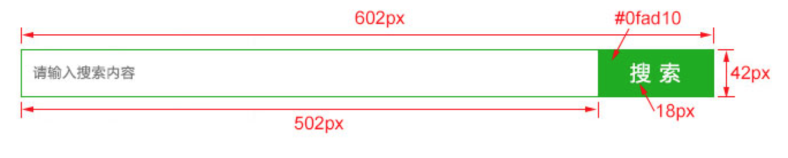

1. html表单
表单用于搜集不同类型的用户输入，表单由不同类型的标签组成，相关标签及属性用法如下：
<form>标签 定义整体的表单区域- action属性 定义表单数据提交地址
- method属性 定义表单提交的方式，一般有“get”方式和“post”方式
<label>标签 为表单元素定义文字标注<input>标签 定义通用的表单元素- type属性
type="text"定义单行文本输入框type="password"定义密码输入框type="radio"定义单选框type="checkbox"定义复选框type="file"定义上传文件type="submit"定义提交按钮type="reset"定义重置按钮type="button"定义一个普通按钮
- value属性 定义表单元素的值
- name属性 定义表单元素的名称，此名称是提交数据时的键名
- type属性
<textarea>标签 定义多行文本输入框<select>标签 定义下拉表单元素<option>标签 与<select>标签配合，定义下拉表单元素中的选项
1.1. 注册表单实例：
<!DOCTYPE html>
<html lang="en">
<head>
<meta charset="UTF-8">
<meta name="viewport" content="width=device-width, initial-scale=1.0">
<meta http-equiv="X-UA-Compatible" content="ie=edge">
<title>Document</title>
</head>
<body>
<h3>用户注册</h3>
<form action="http://www/baidu.com" method="GET">
<p>
<label>用户名：</label>
<input type="text" name="username">
</p>
<p>
<label>密 码：</label>
<input type="password" name="password">
</p>
<p>
<label>性 别：</label>
<input type="radio" name="gender" value="0"> 男
<input type="radio" name="gender" value="1"> 女
</p>
<p>
<label>爱 好：</label>
<input type="checkbox" name="hobby" value="programmer"> 编程
<input type="checkbox" name="hobby" value="study"> 学习
<input type="checkbox" name="hobby" value="self-study"> 自习
<input type="checkbox" name="hobby" value="review"> 复习
<input type="checkbox" name="hobby" value="foot"> 捏脚
</p>
<p>
<label>玉 照：</label>
<input type="file" name="pic">
</p>
<p>
<label>籍 贯：</label>
<select name="site">
<option value="0">北京</option>
<option value="1">上海</option>
<option value="2">广州</option>
<option value="3">深圳</option>
</select>
</p>
<p>
<label>简 介：</label>
<textarea name="info"></textarea>
</p>
<p>
<input type="submit" value="提交" name="p">
<input type="reset" value="重置">
<input type="button" value="普通按钮">
</p>
</form>
</body>
</html>
1.2. 表单常用样式、属性及示例
outline 设置input框获得焦点时，是否显示凸显的框线，一般设置为没有,比如：outline:none; placeholder 设置input输入框的默认提示文字。
1.3. 练习

<!DOCTYPE html>
<html lang="en">
<head>
<meta charset="UTF-8">
<meta name="viewport" content="width=device-width, initial-scale=1.0">
<meta http-equiv="X-UA-Compatible" content="ie=edge">
<title>Document</title>
<style>
.search_form {
width: 602px;
height: 42px;
background: gold;
margin: 100px auto;
}
.input_txt {
width: 500px;
height: 40px;
border: 1px solid #0fad10;
/* 清除输入框默认的padding值 */
padding: 0px;
/* 通过浮动解决内联元素默认间距以及基线对齐的问题 */
float: left;
/* 让文字缩进 */
text-indent: 10px;
/* 去掉输入框点击时显示的蓝色高亮框 */
outline: none;
}
.input_sub {
width: 100px;
height: 42px;
background: #0fad10;
/* 去掉按钮默认的边框 */
border: 0px;
/* 通过浮动解决内联元素默认间距以及基线对齐的问题 */
float: left;
font-size: 18px;
color: white;
outline: none;
}
</style>
</head>
<body>
<!--
https://cn.bing.com/search?q=c&qs=n&form=QBLH&sp=-1&pq=c&sc=10-1&sk=&cvid=29A29F29BADE4EFC95283176AAA31A3F
-->
<form class="search_form" action="https://cn.bing.com/search">
<!-- 设置输入框默认的提示文字，用placeholder属性 -->
<input type="text" class="input_txt" placeholder="请输入框搜索内容" name="q">
<input type="submit" value="搜 索" class="input_sub">
</form>
</body>
</html>